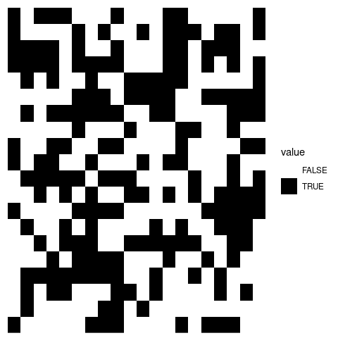
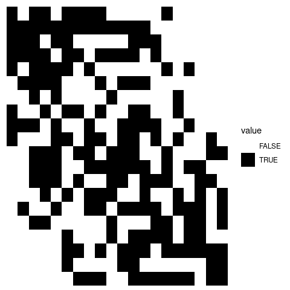
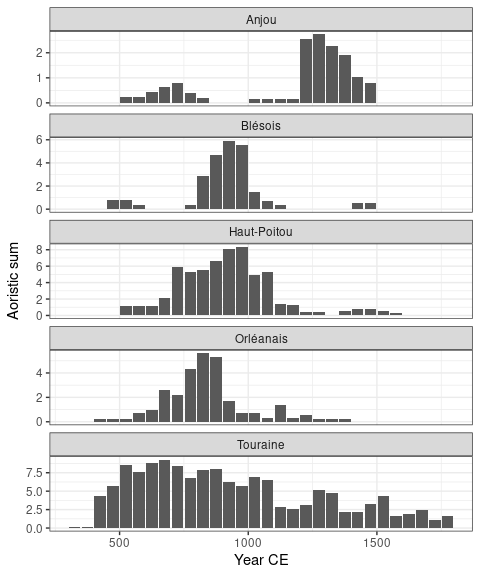
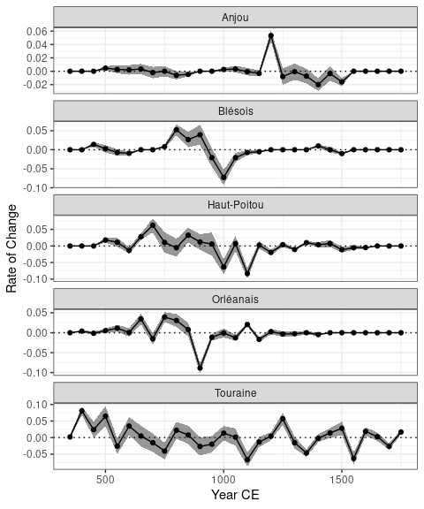

Overview
A convenient and reproducible toolkit for relative and absolute dating and analysis of chronological patterns. This package includes functions for chronological modeling and dating of archaeological assemblages from count data. It provides methods for matrix seriation. It also allows to compute time point estimates and density estimates of the occupation and duration of an archaeological site. kairos provides methods for:
- Matrix seriation:
seriate_rank()andseriate_average() - Mean ceramic date estimation (South 1977):
mcd() - Event and accumulation date estimation (Bellanger and Husi 2012):
event() - Aoristic analysis (Ratcliffe 2000):
aoristic() - Chronological apportioning (Roberts et al. 2012):
apportion()
tabula is a companion package to kairos that provides functions for visualization and analysis of archaeological count data.
Installation
You can install the released version of kairos from CRAN with:
install.packages("kairos")And the development version from GitHub with:
# install.packages("remotes")
remotes::install_github("tesselle/kairos")Usage
kairos only supports dates expressed in CE years (BCE years must be given as negative numbers). All results are rounded to zero decimal places (sub-annual precision does not make sense in most situations). You can change this behavior with options(kairos.precision = x) (for x decimal places).
It assumes that you keep your data tidy: each variable (type/taxa) must be saved in its own column and each observation (sample/case) must be saved in its own row.
## Build an incidence matrix with random data
set.seed(12345)
incidence1 <- matrix(sample(0:1, 400, TRUE, c(0.6, 0.4)), nrow = 20)
incidence1 <- incidence1 > 0 # logical
## Get seriation order on rows and columns
(indices <- seriate_rank(incidence1, margin = c(1, 2), stop = 100))
#> <RankPermutationOrder>
#> Permutation order for matrix seriation:
#> - Row order: 1 4 20 3 9 16 19 10 13 2 11 7 17 5 6 18 14 15 8 12...
#> - Column order: 1 16 9 4 8 14 3 20 13 2 6 18 7 17 5 11 19 12 15 10...
## Permute rows and columns
incidence2 <- permute(incidence1, indices)
## Plot matrix
tabula::plot_heatmap(incidence1) +
khroma::scale_fill_logical()
tabula::plot_heatmap(incidence2) +
khroma::scale_fill_logical()

## Aoristic Analysis
data("loire", package = "folio")
loire <- subset(loire, area %in% c("Anjou", "Blésois", "Orléanais", "Haut-Poitou", "Touraine"))
## Get time range
loire_range <- loire[, c("lower", "upper")]
## Calculate aoristic sum (weights) by group
aorist_groups <- aoristic(loire_range, step = 50, weight = TRUE,
groups = loire$area)
plot(aorist_groups)

Contributing
Please note that the kairos project is released with a Contributor Code of Conduct. By contributing to this project, you agree to abide by its terms.